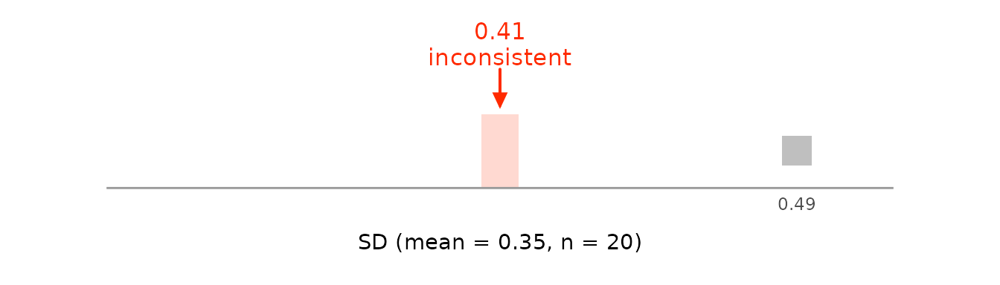
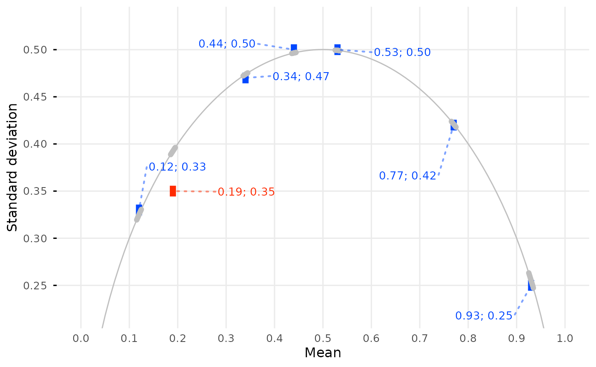

The descriptive binary test, or DEBIT, checks whether the reported mean, sample SD, and sample size of binary data are mutually consistent (Heathers and Brown 2019). In binary data, the mean determines the SD: if of values are 1, the mean is , and the sample SD follows from and . DEBIT checks whether there is any for which both the mean and the SD would be reported as the given values.
DEBIT is a narrow method: it applies only to binary data, such as yes/no answers or the share of participants in some category. That is why this vignette covers everything at once, unlike the basics and in-depth vignettes for GRIM and GRIMMER.
Single cases: debit()
debit(x = 0.35, sd = 0.18, n = 20, digits_x = 2, digits_sd = 2, data_type = "integer")
#> [1] FALSEAs in grim(), the numbers of decimal places must be
given, because numeric values lose trailing zeros. So must
data_type, which is "integer" for the binary
values 0 and 1; see vignette("grim"). The SD is taken to be
a sample SD; for a population SD, which divides by
rather than
,
set sd_meaning = "sd_pop", as in
vignette("grimmer-in-depth").
By default (formula = "exact"), DEBIT only considers
means that n binary values can have, that is,
k / n for a whole number k. The original
formulation treats the mean as continuous, so it accepts some SDs that
no binary sample of size n can have.
formula = "mean_n" reproduces it.
Many cases: debit_map()
debit_map() tests every row of a data frame. These
example data are made up:
flying_pigs <- tibble::tibble(
x = c(0.4, 0.62, 0.95, 0.38, 0.96),
sd = c(0.49, 0.49, 0.22, 0.29, 0.20),
n = 1000,
)
flying_pigs |>
debit_map(digits_x = 2, digits_sd = 2, data_type = "integer")
#> # A tibble: 5 × 7
#> # DEBIT: default settings
#> x sd n data_type digits_x digits_sd consistency
#> <dbl> <dbl> <int> <chr> <int> <int> <lgl>
#> 1 0.4 0.49 1000 integer 2 2 TRUE
#> 2 0.62 0.49 1000 integer 2 2 TRUE
#> 3 0.95 0.22 1000 integer 2 2 TRUE
#> 4 0.38 0.29 1000 integer 2 2 FALSE
#> 5 0.96 0.2 1000 integer 2 2 TRUEWith show_rec = TRUE, the output also has the
reconstructed values: the rounding bounds of sd and
x (sd_incl_lower and
sd_incl_upper say whether the bounds of sd are
included), and sum_lower and sum_upper, the
smallest and largest numbers of ones whose mean would be reported as
x. pigs3 is an example dataset that comes with
scrutiny:
pigs3
#> # A tibble: 7 × 3
#> x sd n
#> <dbl> <dbl> <dbl>
#> 1 0.53 0.5 1683
#> 2 0.44 0.5 1683
#> 3 0.77 0.42 1683
#> 4 0.19 0.35 1683
#> 5 0.34 0.47 1683
#> 6 0.93 0.25 1683
#> 7 0.12 0.33 1683
pigs3 |>
debit_map(digits_x = 2, digits_sd = 2, data_type = "integer", show_rec = TRUE)
#> # A tibble: 7 × 15
#> # DEBIT: show_rec = TRUE
#> x sd n data_type digits_x digits_sd consistency sd_lower
#> <dbl> <dbl> <int> <chr> <int> <int> <lgl> <dbl>
#> 1 0.53 0.5 1683 integer 2 2 TRUE 0.495
#> 2 0.44 0.5 1683 integer 2 2 TRUE 0.495
#> 3 0.77 0.42 1683 integer 2 2 TRUE 0.415
#> 4 0.19 0.35 1683 integer 2 2 FALSE 0.345
#> 5 0.34 0.47 1683 integer 2 2 TRUE 0.465
#> 6 0.93 0.25 1683 integer 2 2 TRUE 0.245
#> 7 0.12 0.33 1683 integer 2 2 TRUE 0.325
#> # ℹ 7 more variables: sd_incl_lower <lgl>, sd_upper <dbl>, sd_incl_upper <lgl>,
#> # x_lower <dbl>, x_upper <dbl>, sum_lower <dbl>, sum_upper <dbl>DEBIT applies to binary data only, so x and
sd must lie between 0 and 1:
pigs5 |>
debit_map(digits_x = 2, digits_sd = 2, data_type = "integer")
#> Error in `debit_map()`:
#> ! DEBIT only works with binary summary data.
#> ! Binary mean (`x`) values must range from 0 to 1.
#> ✖ `x` is 7.22.Unlike grim_map(), debit_map() has no
x_meaning or items_averaged argument, since
neither applies to binary data. It takes the same rounding arguments;
see
vignette("rounding-options", package = "roundwork").
Explaining consistency results
explain_print() explains the results of
debit_map() step by step, as for GRIM and GRIMMER. Here is
the inconsistent value set from pigs3:
pigs3 |>
debit_map(digits_x = 2, digits_sd = 2, data_type = "integer") |>
dplyr::filter(!consistency) |>
explain_print()
#> DEBIT test: x = 0.19, sd = 0.35, n = 1683, data_type = "integer"
#>
#> DEBIT is about binary data, where every value is 0 or 1. The mean is then the
#> share of ones, and the SD follows from the number of ones and the sample size.
#>
#> The mean was reported as 0.19, with 2 decimal places. Before rounding (assuming
#> either rounding up from 5 or down from 5), it could have been anything from
#> 0.185 to 0.195.
#>
#> With 1683 values, the mean is the number of ones divided by 1683, so that
#> number must be from 0.185 * 1683 = 311.355 to 0.195 * 1683 = 328.185. It has to
#> be an integer, so it can be anything from 312 to 328.
#>
#> The SD was reported as 0.35, with 2 decimal places. Before rounding, it could
#> have been anything from 0.345 to 0.355.
#>
#> With k ones among 1683 values, the SD is sqrt(k * (1683 - k) / (1683 * 1682)).
#> Even the smallest of these SDs, for k = 312, is
#> sqrt(312 * 1371 / 2830806) = 0.3887, which is above that range.
#>
#> ==> Inconsistentexplain_map() adds the explanations as an
explanation column instead, and
debit_explain() explains a single value set. Only the
default formula = "exact" can be explained.
Single value sets in detail
debit_values() lists the samples behind a value set:
each number of ones whose mean and SD would be reported as the given
ones. Seven ones among 20 values have a mean of 0.35 and an SD of
0.49:
debit_values(x = 0.35, sd = 0.49, n = 20, digits_x = 2, digits_sd = 2, data_type = "integer")
#> # A tibble: 1 × 5
#> case x sd n sum
#> <int> <dbl> <dbl> <int> <dbl>
#> 1 1 0.35 0.4894 20 7An SD of 0.41 with the same mean is inconsistent, so
debit_values() would return no rows.
debit_closest() returns the sample whose SD is closest to
the reported one instead:
debit_closest(x = 0.35, sd = 0.41, n = 20, digits_x = 2, digits_sd = 2, data_type = "integer")
#> # A tibble: 1 × 5
#> case x sd n sum
#> <int> <dbl> <dbl> <int> <dbl>
#> 1 1 0.35 0.4894 20 7Only seven ones give a mean of 0.35 here, so the closest SD is the same 0.49 as above, far from the reported 0.41.
debit_plot_line() draws the SDs that n
binary values with the reported mean can have, around the reported
SD:
debit_plot_line(x = 0.35, sd = 0.41, n = 20, digits_x = 2, digits_sd = 2, data_type = "integer")
sd_binary_groups() computes the SD of binary data from
the numbers of zeros and ones, and sd_binary_mean_n() from
the mean and the sample size:
sd_binary_groups(group_0 = 13, group_1 = 7)
#> [1] 0.4893605
sd_binary_mean_n(x = 0.35, n = 20)
#> [1] 0.4893605Both take sd_meaning, as debit() does, for
a population SD or a standard error.
Summaries with audit()
pigs3 |>
debit_map(digits_x = 2, digits_sd = 2, data_type = "integer") |>
audit()
#> # A tibble: 1 × 6
#> all_cases incon_cases emp_incon mean_x mean_sd distinct_n
#> <int> <int> <dbl> <dbl> <dbl> <int>
#> 1 7 1 0.1429 0.4743 0.4029 1-
all_cases,incon_cases,emp_incon: the total number of value sets, the number of inconsistent ones, and their ratio. -
mean_x,mean_sd: the means of the reported means and SDs. -
distinct_n: the number of distinct sample sizes.
Visualization with debit_plot()
debit_plot() takes the output of
debit_map(). It needs the ggrepel package for its
labels.
# `theme_set()` applies to all later plots in the session:
ggplot2::theme_minimal(base_size = 12) |>
ggplot2::theme_set()
pigs3 |>
debit_map(digits_x = 2, digits_sd = 2, data_type = "integer") |>
debit_plot()
The arc is the DEBIT line: the SD of binary data as a function of
their mean, for the given sample size. The points on it are the means
that n binary values can have. Each value set is a
rectangle spanning the rounding bounds of its mean and SD, drawn over a
point at the reported values in case the rectangle is too small to see.
Under formula = "exact", a value set is consistent if one
of the points lies inside its rectangle. Consistent sets are blue,
inconsistent ones red; see ?debit_plot for other colors. If
n varies, the lines for the smallest and largest
n are drawn and the band between them is shaded.
Values around the reported ones: debit_map_seq()
debit_map_seq() varies x, sd,
and n around the reported values and tests each result:
out_seq1 <- debit_map_seq(pigs3, digits_x = 2, digits_sd = 2, data_type = "integer")
out_seq1
#> # A tibble: 30 × 10
#> # DEBIT: default settings
#> x sd n data_type digits_x digits_sd consistency diff_var case
#> <dbl> <dbl> <int> <chr> <int> <int> <lgl> <int> <int>
#> 1 0.14 0.35 1683 integer 2 2 TRUE -5 4
#> 2 0.15 0.35 1683 integer 2 2 TRUE -4 4
#> 3 0.16 0.35 1683 integer 2 2 FALSE -3 4
#> 4 0.17 0.35 1683 integer 2 2 FALSE -2 4
#> 5 0.18 0.35 1683 integer 2 2 FALSE -1 4
#> 6 0.2 0.35 1683 integer 2 2 FALSE 1 4
#> 7 0.21 0.35 1683 integer 2 2 FALSE 2 4
#> 8 0.22 0.35 1683 integer 2 2 FALSE 3 4
#> 9 0.23 0.35 1683 integer 2 2 FALSE 4 4
#> 10 0.24 0.35 1683 integer 2 2 FALSE 5 4
#> # ℹ 20 more rows
#> # ℹ 1 more variable: var <chr>
audit(out_seq1)
#> # A tibble: 1 × 18
#> x sd n data_type consistency hits_total hits_x hits_sd hits_n
#> <dbl> <dbl> <int> <chr> <lgl> <int> <int> <int> <int>
#> 1 0.19 0.35 1683 integer FALSE 4 2 2 0
#> # ℹ 9 more variables: diff_x <int>, diff_x_up <int>, diff_x_down <int>,
#> # diff_sd <int>, diff_sd_up <int>, diff_sd_down <int>, diff_n <int>,
#> # diff_n_up <int>, diff_n_down <int>As for GRIM and GRIMMER, the hits_* columns count the
consistent value sets found, and the diff_* columns give
the distance to the nearest one in dispersion steps.
include_consistent = TRUE disperses the consistent value
sets as well:
out_seq2 <- debit_map_seq(
pigs3,
digits_x = 2,
digits_sd = 2,
data_type = "integer",
dispersion = 1:7,
include_consistent = TRUE
)
audit(out_seq2)
#> # A tibble: 7 × 18
#> x sd n data_type consistency hits_total hits_x hits_sd hits_n
#> <dbl> <dbl> <int> <chr> <lgl> <int> <int> <int> <int>
#> 1 0.53 0.5 1683 integer TRUE 25 11 0 14
#> 2 0.44 0.5 1683 integer TRUE 22 8 0 14
#> 3 0.77 0.42 1683 integer TRUE 16 2 0 14
#> 4 0.19 0.35 1683 integer FALSE 4 2 2 0
#> 5 0.34 0.47 1683 integer TRUE 17 2 1 14
#> 6 0.93 0.25 1683 integer TRUE 16 1 1 14
#> 7 0.12 0.33 1683 integer TRUE 16 1 1 14
#> # ℹ 9 more variables: diff_x <int>, diff_x_up <int>, diff_x_down <int>,
#> # diff_sd <int>, diff_sd_up <int>, diff_sd_down <int>, diff_n <int>,
#> # diff_n_up <int>, diff_n_down <int>debit_plot() accepts this output, but the dispersed
value sets overlap into a cross around each case, and their labels crowd
each other out.
Unknown group sizes: debit_map_total_n()
If only the total sample size of two groups is known,
debit_map_total_n() tests hypothetical splits of it, as
grim_map_total_n() does; see
vignette("grim-in-depth") for a case study.
flying_pigs2 <- tibble::tribble(
~x1 , ~x2 , ~sd1 , ~sd2 , ~n ,
0.30 , 0.27 , 0.47 , 0.45 , 70 ,
0.43 , 0.34 , 0.50 , 0.48 , 65
)
out_total_n <- debit_map_total_n(flying_pigs2, digits_x = 2, digits_sd = 2, data_type = "integer")
out_total_n
#> # A tibble: 46 × 11
#> # DEBIT: default settings
#> x sd n n_change data_type digits_x digits_sd consistency
#> <dbl> <dbl> <int> <int> <chr> <int> <int> <lgl>
#> 1 0.3 0.47 35 0 integer 2 2 FALSE
#> 2 0.27 0.45 35 0 integer 2 2 FALSE
#> 3 0.3 0.47 34 -1 integer 2 2 FALSE
#> 4 0.27 0.45 36 1 integer 2 2 FALSE
#> 5 0.3 0.47 33 -2 integer 2 2 TRUE
#> 6 0.27 0.45 37 2 integer 2 2 TRUE
#> 7 0.3 0.47 32 -3 integer 2 2 FALSE
#> 8 0.27 0.45 38 3 integer 2 2 FALSE
#> 9 0.3 0.47 31 -4 integer 2 2 FALSE
#> 10 0.27 0.45 39 4 integer 2 2 FALSE
#> # ℹ 36 more rows
#> # ℹ 3 more variables: both_consistent <lgl>, case <int>, dir <fct>
audit(out_total_n)
#> # A tibble: 2 × 10
#> x1 x2 sd1 sd2 n hits_total hits_forth hits_back scenarios_total
#> <dbl> <dbl> <dbl> <dbl> <int> <int> <int> <int> <int>
#> 1 0.3 0.27 0.47 0.45 70 2 2 0 11
#> 2 0.43 0.34 0.5 0.48 65 1 1 0 12
#> # ℹ 1 more variable: hit_rate <dbl>Interpreting results
An inconsistency means that an assumption of the test is false or that a number was reported incorrectly, often for a benign reason. What to rule out before drawing conclusions is discussed in the section on interpreting GRIM results of Hussey (2026). The same reasoning applies to DEBIT.